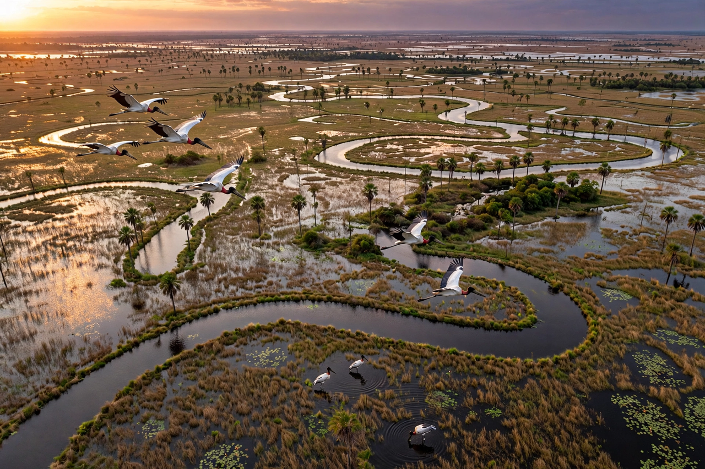

| Mato Grosso do Sul | |
|---|---|
| Country | Brazil |
| Capital / largest city | Campo Grande |
| Created | 11 October 1977 (split from Mato Grosso); installed 1 January 1979 |
| Area | 357,125 km² (9th in Brazil) |
| Population | c. 2.76 million (2022 census) |
| Municipalities | 79 |
| Borders | Mato Grosso, Goiás, Minas Gerais, São Paulo, Paraná; Bolivia, Paraguay |

Mato Grosso do Sul (Portuguese for "Southern Thick Forest") is a state in the Central-West Region of Brazil. It was created in 1977 by dividing the state of Mato Grosso, taking effect on 1 January 1979, and its name was deliberately chosen so that the older state kept the name Mato Grosso. The state borders Bolivia and Paraguay to the west and is famous for the southern portion of the Pantanal, the world's largest tropical wetland, and for the ecotourism town of Bonito. Its capital and largest city is Campo Grande, nicknamed the "Cidade Morena" (Swarthy City) for its reddish soil.
Mato Grosso do Sul occupies 357,125 km² of Brazil's central-western plateau. The west of the state is formed by the low-lying Pantanal floodplain, at about 100 metres elevation, which floods seasonally with water from the Paraguay River basin; the east rises to plateaus of the Brazilian Highlands, drained by tributaries of the Paraná River, including the Aquidauana, Taquari, and Miranda rivers. The climate is tropical, with a rainy season from October to April. The vegetation is predominantly cerrado (tropical savanna), giving way to Pantanal wetlands and remnants of Atlantic Forest in the south.
The territory was inhabited by Indigenous peoples including the Guaicuru, Kadiwéu, Terena, and Guaraní. Jesuit missions operated in the Itatín region in the seventeenth century before bandeirante raids and the expulsion of the Jesuits ended them. The region was strategically contested in the Paraguayan War (1864–1870), when Paraguayan forces invaded through what is now southern Mato Grosso do Sul, occupying Corumbá and fighting the famous Retreat of the Laguna campaign. Settlement expanded with cattle ranching in the late nineteenth century and the yerba mate trade. In the 1930s and 1940s, southern separatists agitated for separation from Cuiabá's distant administration, a goal realised only under the military government, when President Ernesto Geisel signed Complementary Law No. 31 of 11 October 1977 creating the new state.
The economy rests on agriculture and livestock: the state is one of Brazil's great cattle-ranching regions and a major producer of soybeans, corn, and sugarcane. Industry centres on food processing, meatpacking, and mining (iron and manganese at Corumbá, from the Urucum massif). Ecotourism is significant — the southern Pantanal offers jaguar and wildlife viewing around Aquidauana and Miranda, while Bonito's crystal-clear rivers (Rio da Prata, Rio Sucuri) and caves such as the Gruta do Lago Azul draw snorkellers and divers.
The 2022 census recorded about 2.76 million inhabitants, with Campo Grande home to roughly 900,000. The population includes one of Brazil's largest Indigenous populations, notably Terena and Guaraní-Kaiowá communities — whose land conflicts with ranchers are a persistent human-rights issue — and notable Japanese (Okinawan) immigration, visible in Campo Grande's Sobaria noodle culture. Regional music blends Paraguayan polca and guarânia with Brazilian sertanejo, and the traditional drink is tereré, cold-brewed yerba mate shared from a horn cup.